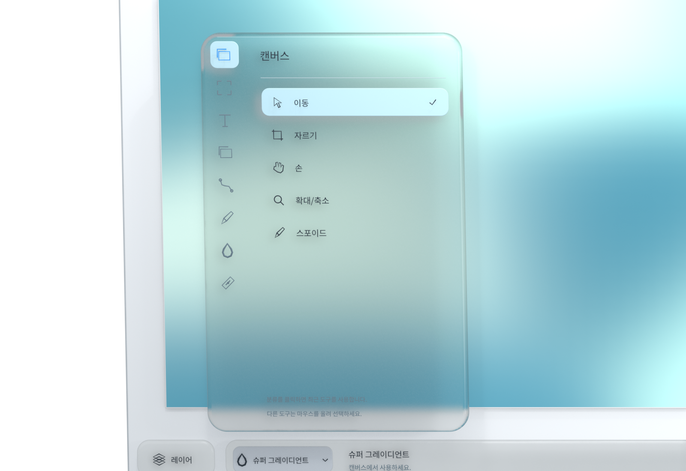
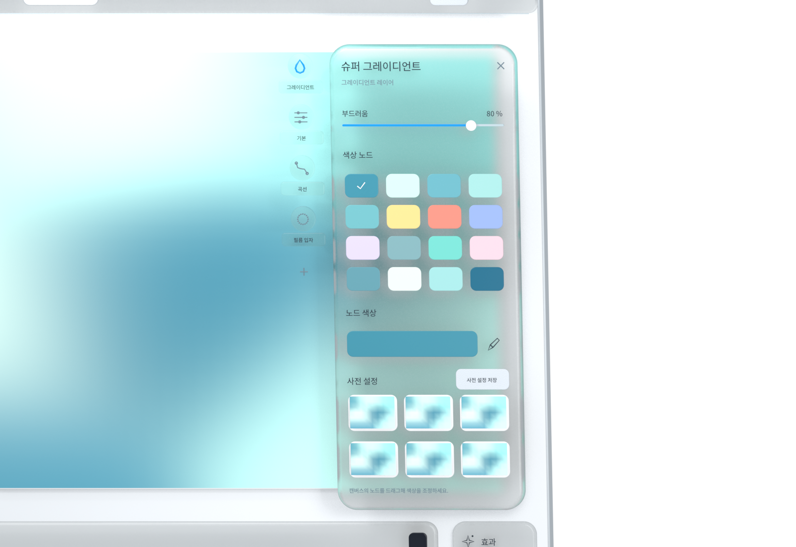
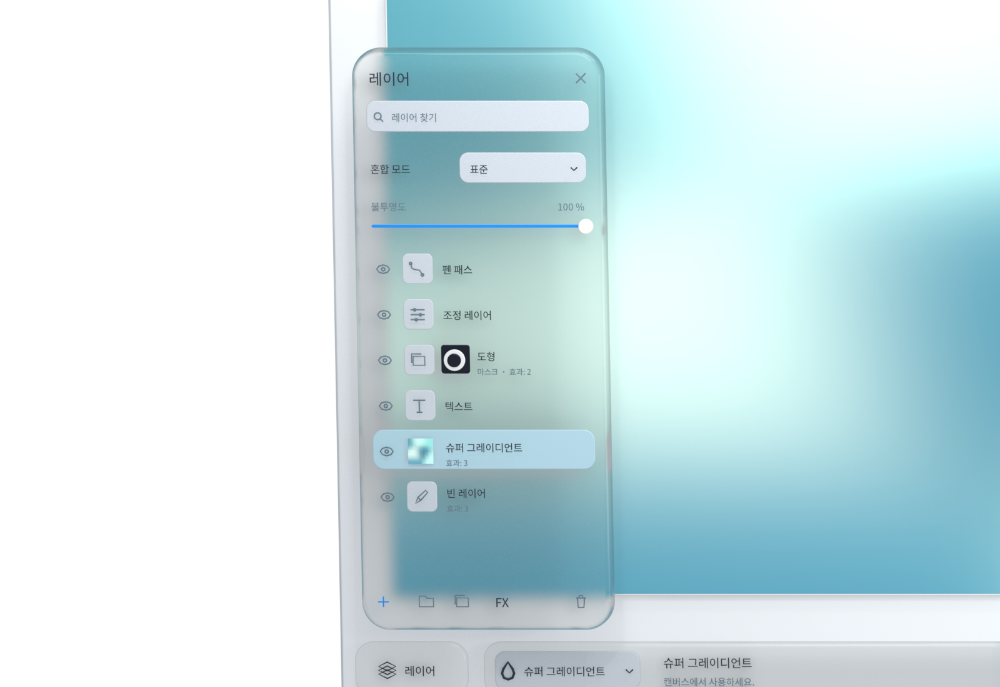
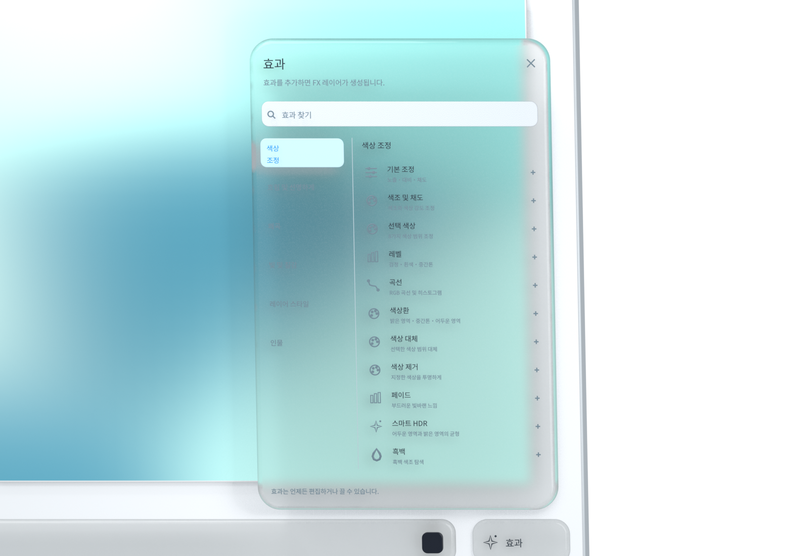
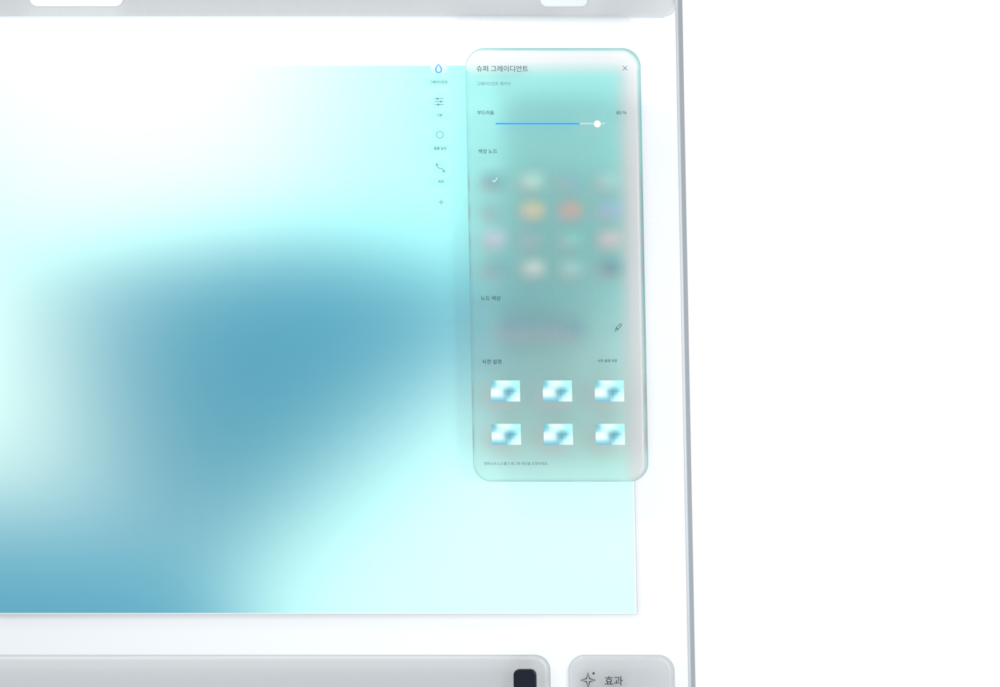

손에 익는 도구
직관을 따라 창작을 시작하세요.
이동과 자르기부터 브러시와 패스까지, 작업에 맞게 정리된 도구. 메뉴를 열고 필요한 도구를 선택해 다음 한 획을 시작하세요.


잠깐 떠오른 생각을 나만의 표현으로.
스크롤하여 살펴보기 ↓iMage Pro
처음부터 모든 단계를 정할 필요는 없습니다. 먼저 한 획을 그리고 직관을 따라 탐색하세요. 작은 시작이 풍부한 작품이 될 수 있습니다.
아이디어를 따라 아래로.
손에 익는 도구
이동과 자르기부터 브러시와 패스까지, 작업에 맞게 정리된 도구. 메뉴를 열고 필요한 도구를 선택해 다음 한 획을 시작하세요.

흐르는 색상
슈퍼 그레이디언트의 노드를 움직이며 색의 흐름을 탐색하세요. 마음에 드는 조합을 프리셋으로 저장해 다음 작업에 사용할 수 있습니다.

자유로운 레이어
레이어로 화면을 구성하고 마스크로 변화를 시도하세요. 다른 표현을 탐색한 뒤 마음에 드는 상태로 돌아올 수 있습니다.

겹쳐 쓰는 효과
색상 조정부터 빛과 질감까지, 분류에서 원하는 변화를 찾으세요. 효과를 조합하고 시도하며 나만의 표현을 발견하세요.

표현을 바꾸는 순서
효과는 배치된 순서대로 적용됩니다. 드래그로 순서를 바꿔 같은 효과로도 다른 결과를 탐색해 보세요.

내 Mac에서
이미지와 프로젝트는 로컬에서 처리됩니다. 계정, 광고 추적, 사용 분석이 없으며 창작물을 자동으로 업로드하지 않습니다.
개인정보 안내 읽기 ↗누구나 자유롭게 창작
무료로 사용할 수 있으며 소스 코드는 Apache-2.0 라이선스로 공개됩니다. 타사 구성 요소와 브랜드 소재에는 각각의 조건이 적용됩니다.
GitHub ↗中文 · ENGLISH · 日本語 · 한국어
중국어 간체, 영어, 한국어, 일본어를 지원합니다. 앱 설정에서 표시 언어를 바꿀 수 있습니다.
월간 영감 전시
매달 하나의 주제와 주목할 만한 작품을 소개합니다. 홈페이지 소개, 작가명 표시, 포트폴리오 링크로 창작을 응원합니다. 상금은 없습니다.
월간 전시 안내 ↗작품 소개 · 작가명 표시 · 디지털 선정 카드
다음 영감을 위한 공간
무료로 사용하세요. 계정은 필요 없습니다.
Mac 미리 보기 다운로드Apple Silicon · macOS 14 이상. Apple 공증을 받지 않은 미리 보기 버전입니다. 설치 방법은 릴리스 페이지를 확인하세요. GitHub Releases ↗